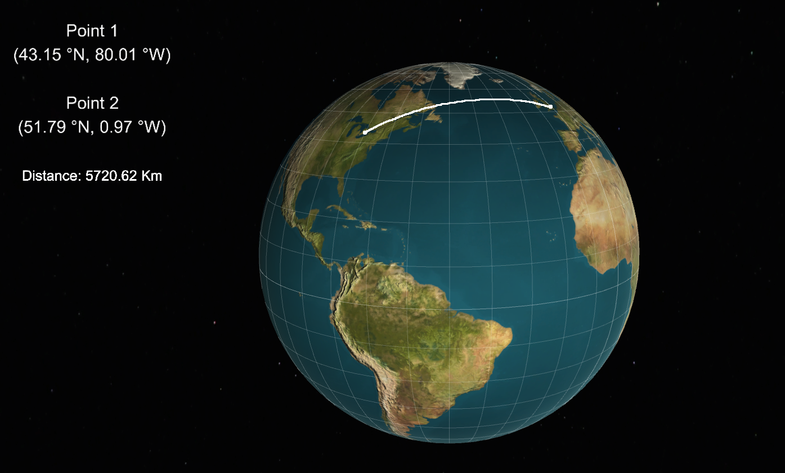

Tribreak
April 2019
A game I've been working on and off of for the past 2 years. I finally decided to rip off the bandaid and finish the damn thing,
and this is the result. The game is a completely original concept, I didn't follow any stupid youtube tutorial series to make it.
The game requires you to beat levels by stragically destroying all the triangles in a way that lets you land on other triangles.
I designed all the textures, sounds, gameplay, code, and marketing by myself, which is kinda dope. I released it on android for free,
so if you have an android phone you can download and play it! (you better give 5 stars)
Links:
Google Play
Mandelbrot Set
November 2018
It's cool to see the complexity in simplicity. The Mandelbrot set is the repeated application of a simple recursive function across many points,
which can create some deceptively complex results. I originally created this project in c++ using the BGI graphics interface, but that
library turned out to be a slow piece of trash. Recently, I decided to port it into OpenGL using GLFW, which made it a lot faster and more detailed.
Links:
Github
-
Wikipedia
Game of Life
June 2018
Is the universe a simulation? After programming this project and seeing how easy it is to create lifelike results, I don't even know anymore.
The Game of Life is a simple cellular life simulation, where each cell either lives onto the next generation or dies, depending
on a few simple rules. The results kinda look like cells fighting for life which I think is kinda neat, and you can play god and wipe them
all out if you want. This application was made in c++ using OpenGL.
Links:
Github
-
Youtube

Spherical Navigation
October 2017

Back in grade 7, I took a trip to Germany with my scout group. On the flight between Toronto and Frankfurt, I remember seeing Greenland
and thinking "why is the plane flying past Greenland, Germany isn't that far north!". Well silly old me didn't understand how flight
trajectories worked. This application graphically displays the shortest distance between two user-selected points on the earth.
I wrote this project in Unity3d using Javascript before I realized c♯ would have been a
better alternative, but the code works so I can't complain.
Links:
Github